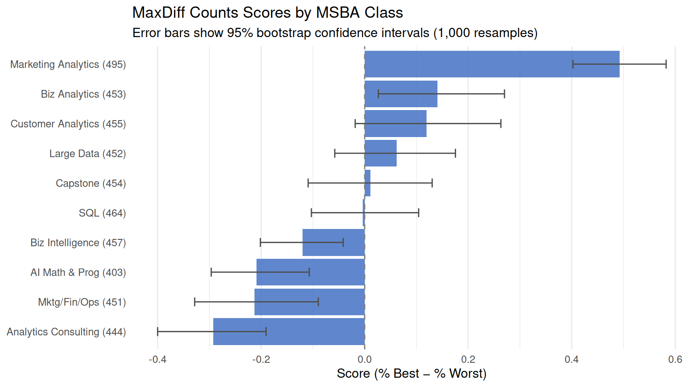
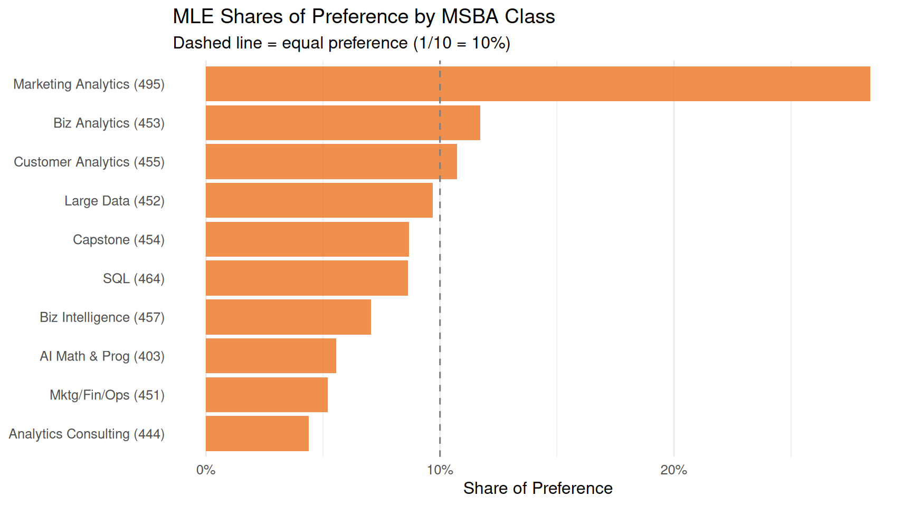
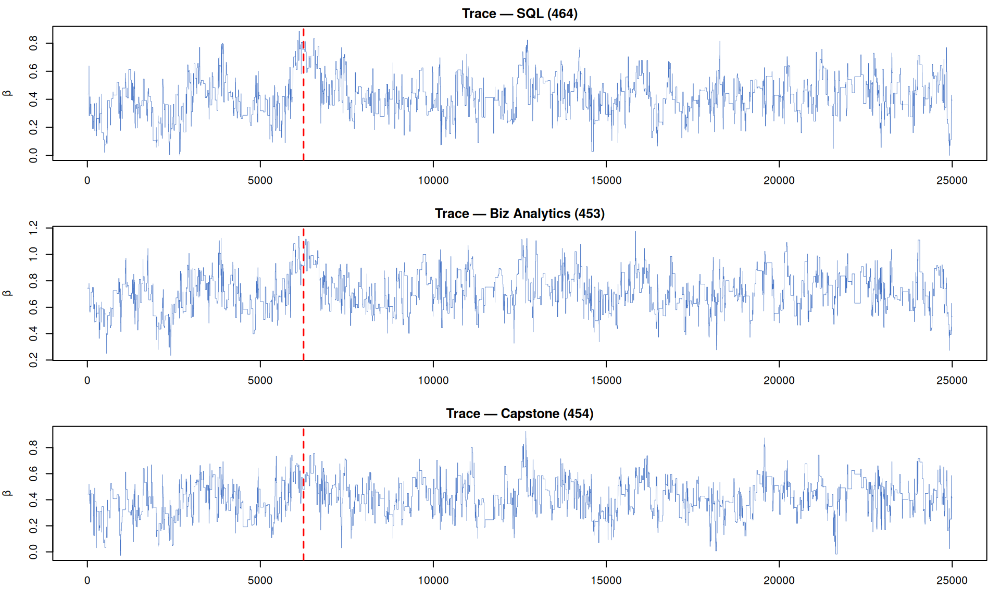
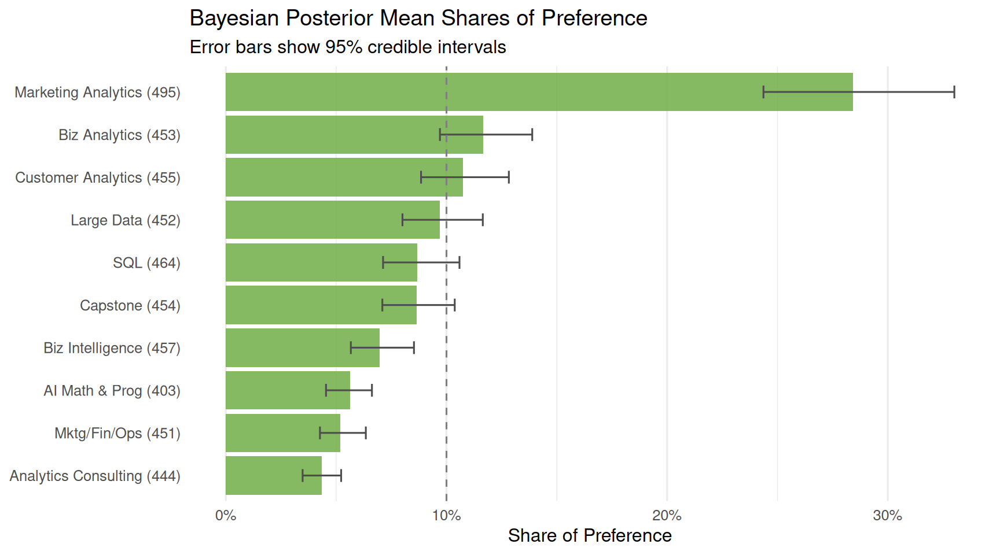
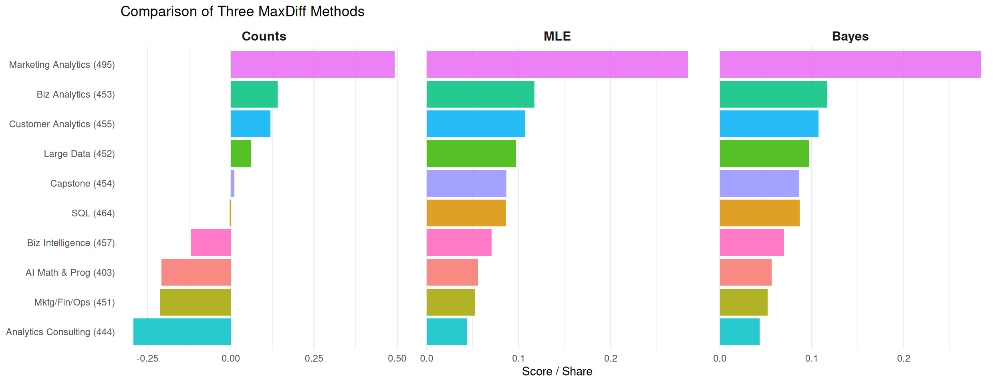

Counts, MLE, and Bayesian estimation of the MNL model
Author
Yiwei Zhang
Published
May 28, 2026
Introduction
MaxDiff, or Best-Worst Scaling, is a survey method that measures how much people prefer one option over another. Rather than asking respondents to assign scores, each screen presents a small set of items — in our case, 4 courses — and asks them to pick the one they like most and the one they like least. This repeats across many screens.
The reason for this design comes down to how humans think. We are not good at calibrating numbers — give ten people a rating scale and you will get ten different interpretations of what a “7” means. But we are quite good at trade-offs: given a few options side by side, we can reliably say which one we want most and which one we want least. MaxDiff exploits this strength and avoids the scale-use bias that makes rating data so noisy.
Here, the 10 items are the core MSBA courses at UCSD Rady. The data come from a survey completed by students in the program. Our goal is to estimate each course’s relative preference using three methods:
A counts analysis — the percentage of times a course was picked best minus the percentage of times it was picked worst
A multinomial logit (MNL) model fit by maximum likelihood — a model that formalizes the choice process and extracts more information from the data
The same MNL model fit by Bayesian methods via a Metropolis-Hastings MCMC sampler
We expect all three methods to agree on the broad ranking — the most and least popular courses should be consistent across approaches. Where they will differ is in how they measure the strength of those preferences and how they express uncertainty around their estimates.
The Data
Code
library(tidyverse)library(knitr)library(kableExtra)choices_raw <-read_csv("maxdiff_design_and_choices.csv")labels <-read_csv("maxdiff_item_labels.csv")colnames(choices_raw) <-c("respondent", "task", "position", "item", "response")colnames(labels) <-c("item_num", "item_label")labels <- labels %>%select(item_num, item_label) %>%mutate(item_label =str_trim(item_label),short_label =case_when( item_num ==1~"AI Math & Prog (403)", item_num ==2~"SQL (464)", item_num ==3~"Mktg/Fin/Ops (451)", item_num ==4~"Large Data (452)", item_num ==5~"Biz Analytics (453)", item_num ==6~"Analytics Consulting (444)", item_num ==7~"Customer Analytics (455)", item_num ==8~"Capstone (454)", item_num ==9~"Marketing Analytics (495)", item_num ==10~"Biz Intelligence (457)" ) )# Tasks 9-15 contain a pilot item (item 11) with only a best pick and no worst pick.# We retain only tasks 1-8, which are the complete 4-item MaxDiff tasks.choices <- choices_raw %>%filter(task <=8)
Code
N <-n_distinct(choices$respondent)T_per <- choices %>%group_by(respondent) %>%summarise(n =n_distinct(task)) %>%pull(n) %>%unique()J <-4total_items <-n_distinct(choices$item)cat("Number of respondents (N):", N, "\n")
exposure <- choices %>%group_by(item) %>%summarise(times_shown =n(), .groups ="drop") %>%left_join(labels, by =c("item"="item_num")) %>%arrange(item)kable( exposure %>%select(item, short_label, times_shown),col.names =c("Item #", "Class", "Times Shown"),caption ="Number of times each item was shown across the study") %>%kable_styling(bootstrap_options =c("striped", "hover"), full_width =FALSE)
Number of times each item was shown across the study
Item #
Class
Times Shown
1
AI Math & Prog (403)
273
2
SQL (464)
274
3
Mktg/Fin/Ops (451)
272
4
Large Data (452)
276
5
Biz Analytics (453)
270
6
Analytics Consulting (444)
267
7
Customer Analytics (455)
276
8
Capstone (454)
272
9
Marketing Analytics (495)
274
10
Biz Intelligence (457)
266
The dataset covers 85 respondents, each completing 8 tasks, with 4 items shown per task, for a total of 680 tasks. The 10 items are the core MSBA courses at Rady. One note on the raw data: tasks 9–15 contained an additional item (item 11) and only recorded a best pick — no worst pick. These tasks do not conform to the standard MaxDiff structure and are excluded from all analyses below. The sanity check on the remaining tasks confirms that every task has exactly one best pick, one worst pick, and two neutral responses. The exposure table shows that each course appeared roughly 265–276 times across the study, confirming that the design is well-balanced and that no course had an unfair advantage from being shown more frequently.
Counts Analysis
The simplest way to summarize MaxDiff data is to count. For each course \(j\), we look at how often it was picked as best and how often it was picked as worst, each as a percentage of the times it was shown. The difference gives a score:
A score close to +1 means students almost always chose that course as their favorite whenever it appeared. A score close to -1 means it was almost always the least preferred. A score near 0 could mean the course is middling, or that opinions are genuinely split. This method is quick and intuitive, but it treats every appearance as independent and ignores who each course was competing against on a given screen.
ggplot(counts_ci, aes(x = score, y = short_label)) +geom_col(fill ="#4472C4", alpha =0.85) +geom_errorbarh(aes(xmin = ci_lo, xmax = ci_hi), height =0.3, color ="gray30") +geom_vline(xintercept =0, linetype ="dashed", color ="gray50") +labs(title ="MaxDiff Counts Scores by MSBA Class",subtitle ="Error bars show 95% bootstrap confidence intervals (1,000 resamples)",x ="Score (% Best − % Worst)",y =NULL ) +theme_minimal(base_size =12) +theme(panel.grid.major.y =element_blank())

Marketing Analytics (495) is the clear standout — students picked it as best 60% of the time it appeared, giving it a score of 0.567, nearly double the next highest. Business Analytics (453) and Customer Analytics (455) follow with scores around 0.25. At the bottom, Analytics Consulting (444) and Mktg/Fin/Ops (451) both score negatively, meaning they were picked worst more often than best. The biggest surprise is AI Math & Programming (403), which has a slightly negative score despite being the foundational quantitative course — when forced to choose against other options, students appear to find it less exciting than necessary.
From MaxDiff Data to MNL Choices
Each MaxDiff task generates two pieces of information: which course was liked most and which was liked least. To turn this into a statistical model, we treat each of these picks as a separate choice observation and model them using the multinomial logit (MNL) framework from week 5.
The MNL model assigns each course \(j\) a utility parameter \(\beta_j\). When a respondent sees four courses \(\{a, b, c, d\}\) and picks \(b\) as best, we model that as a soft-max probability over all four options:
After the best is chosen, the respondent picks a worst from the remaining three. Picking \(c\) as worst is equivalent to picking \(c\) as the “best disliked” option — so we flip the utilities and apply the same soft-max logic to the remaining set:
\[
P(\text{worst} = c \mid \text{best} = b) = \frac{\exp(-\beta_c)}{\exp(-\beta_a) + \exp(-\beta_c) + \exp(-\beta_d)}
\]
This means each task contributes two MNL observations to the likelihood — one for the best pick and one for the worst pick.
One technical detail before we proceed: the soft-max is invariant to adding a constant to all \(\beta\)’s, so the model is not identified as written. Only differences between utilities are meaningful. We handle this by fixing \(\beta_1 = 0\) (AI Math & Programming as the reference course) and estimating the remaining nine parameters \(\beta_2, \ldots, \beta_{10}\). All results should be interpreted relative to this reference.
The log-likelihood for the MaxDiff MNL model sums over all tasks. For each task, we add the log-probability of the observed best pick plus the log-probability of the observed worst pick from the reduced set:
where \(j^*_b\) is the course picked best and \(j^*_w\) is the course picked worst in that task. We code this directly and maximize using optim() with BFGS. Standard errors come from the diagonal of the inverse negative Hessian evaluated at the MLE.
Code
ll <-function(beta_free, task_df) {# pin beta_1 = 0, estimate beta_2 through beta_10 beta_all <-c(0, beta_free) total_ll <-0for (i inseq_len(nrow(task_df))) { items <- task_df$items[[i]] best_item <- task_df$best_item[i] worst_item <- task_df$worst_item[i]# log-prob of best pick u <- beta_all[items] log_p_best <- beta_all[best_item] -log(sum(exp(u)))# log-prob of worst pick from remaining items (flipped utilities) remain <- items[items != best_item] u_neg <--beta_all[remain] log_p_worst <--beta_all[worst_item] -log(sum(exp(u_neg))) total_ll <- total_ll + log_p_best + log_p_worst } total_ll}
These shares sum to 1 across all courses and answer a concrete question: if all 10 courses appeared on a single screen, what fraction of best picks would each one receive? They are much easier to communicate than raw utility values.
Code
kable( mle_df %>%select(item, short_label, beta_hat, se, share) %>%mutate(across(c(beta_hat, se, share), ~round(.x, 4))),col.names =c("Item #", "Class", "β̂", "SE(β̂)", "Share"),caption ="MLE estimates: utility coefficients, standard errors, and shares of preference") %>%kable_styling(bootstrap_options =c("striped", "hover"), full_width =FALSE) %>%footnote(general ="β₁ = 0 by construction (AI Math & Prog is the reference course).")
MLE estimates: utility coefficients, standard errors, and shares of preference
Item #
Class
β
| SE(β
)| Sha
9
Marketing Analytics (495)
1.6298
0.1462
0.2839
5
Biz Analytics (453)
0.7445
0.1418
0.1171
7
Customer Analytics (455)
0.6563
0.1424
0.1072
4
Large Data (452)
0.5553
0.1399
0.0969
8
Capstone (454)
0.4433
0.1397
0.0867
2
SQL (464)
0.4380
0.1373
0.0862
10
Biz Intelligence (457)
0.2359
0.1370
0.0704
1
AI Math & Prog (403)
0.0000
NA
0.0556
3
Mktg/Fin/Ops (451)
-0.0666
0.1395
0.0520
6
Analytics Consulting (444)
-0.2388
0.1406
0.0438
Note:
β₁ = 0 by construction (AI Math & Prog is the reference course).
Code
mle_df %>%mutate(short_label =fct_reorder(short_label, share)) %>%ggplot(aes(x = share, y = short_label)) +geom_col(fill ="#ED7D31", alpha =0.85) +geom_vline(xintercept =0.1, linetype ="dashed", color ="gray50") +labs(title ="MLE Shares of Preference by MSBA Class",subtitle ="Dashed line = equal preference (1/10 = 10%)",x ="Share of Preference",y =NULL ) +scale_x_continuous(labels = scales::percent_format()) +theme_minimal(base_size =12) +theme(panel.grid.major.y =element_blank())

The MLE ranking is broadly consistent with the counts ranking — Marketing Analytics (495) remains at the top and Analytics Consulting (444) at the bottom. The main difference is that MLE spreads the estimates more smoothly: courses that looked similar in the counts analysis get more clearly separated here, because the model uses information from every item shown in each task, not just the one that was picked. For example, a course that was never picked worst even when shown alongside strong competitors gets credit for that, whereas the counts method would simply record zero worst picks regardless of context.
MNL via Bayesian Estimation
Instead of finding a single best-fit parameter vector, the Bayesian approach characterizes the full distribution of plausible \(\boldsymbol{\beta}\) values given the data. From week 7, the posterior is proportional to the likelihood times the prior:
We use a weakly informative normal prior \(\boldsymbol{\beta} \sim N(\boldsymbol{0},\, 10 \cdot I)\), which puts a standard deviation of \(\sqrt{10} \approx 3.2\) on each coefficient. This is diffuse enough that the data drive the results, but not so flat that the sampler wastes time in implausible regions.
To sample from this posterior we use a random-walk Metropolis-Hastings algorithm. At each step, we propose a new \(\boldsymbol{\beta}^*\) by adding Gaussian noise to the current value, then accept or reject based on the ratio of posterior densities.
We want an acceptance rate of roughly 25–40%. A step size that is too large causes almost every proposal to be rejected; too small and the chain moves slowly and gets stuck. We tune by running a short pilot chain first.
post_draws <- mcmc_out$draws[(burn_in +1):n_iter, ]cat("Post-burn-in draws retained:", nrow(post_draws), "\n")
Post-burn-in draws retained: 18750
A well-mixed chain should look like a “fuzzy caterpillar” — rapid up-and-down movement with no slow drift or prolonged stuck periods. We plot three of the nine \(\beta\) parameters to verify this.
Code
par(mfrow =c(3, 1), mar =c(3, 4, 2, 1))for (k inc(1, 4, 7)) {plot(mcmc_out$draws[, k], type ="l", col ="#4472C4",main =paste("Trace —", labels$short_label[k +1]),ylab ="β", xlab ="Iteration", lwd =0.4)abline(v = burn_in, col ="red", lty =2, lwd =1.5)}

All three chains show stable mixing after the burn-in period (red dashed line) with no visible drift, confirming the sampler has converged.
kable( bayes_df %>%select(item, short_label, beta_post, ci_lo, ci_hi, share_post) %>%mutate(across(c(beta_post, ci_lo, ci_hi, share_post), ~round(.x, 4))),col.names =c("Item #", "Class", "Post. Mean β", "2.5%", "97.5%", "Post. Mean Share"),caption ="Bayesian estimates: posterior mean, 95% credible interval, and posterior mean share") %>%kable_styling(bootstrap_options =c("striped", "hover"), full_width =FALSE) %>%footnote(general ="β₁ = 0 fixed (AI Math & Prog is the reference course).")
Bayesian estimates: posterior mean, 95% credible interval, and posterior mean share
Item #
Class
Post. Mean β
2.5%
97.5%
Post. Mean Share
9
Marketing Analytics (495)
1.6221
1.3340
1.9302
0.2841
5
Biz Analytics (453)
0.7313
0.4686
1.0029
0.1167
7
Customer Analytics (455)
0.6480
0.3565
0.9145
0.1074
4
Large Data (452)
0.5467
0.2874
0.7968
0.0971
2
SQL (464)
0.4354
0.1822
0.7070
0.0869
8
Capstone (454)
0.4311
0.1896
0.6960
0.0865
10
Biz Intelligence (457)
0.2172
-0.0307
0.4790
0.0698
1
AI Math & Prog (403)
0.0000
0.0000
0.0000
0.0562
3
Mktg/Fin/Ops (451)
-0.0784
-0.3498
0.2108
0.0520
6
Analytics Consulting (444)
-0.2603
-0.5152
-0.0030
0.0433
Note:
β₁ = 0 fixed (AI Math & Prog is the reference course).
Code
bayes_df %>%mutate(short_label =fct_reorder(short_label, share_post)) %>%ggplot(aes(x = share_post, y = short_label)) +geom_col(fill ="#70AD47", alpha =0.85) +geom_errorbarh(aes(xmin = share_lo, xmax = share_hi),height =0.3, color ="gray30") +geom_vline(xintercept =0.1, linetype ="dashed", color ="gray50") +labs(title ="Bayesian Posterior Mean Shares of Preference",subtitle ="Error bars show 95% credible intervals",x ="Share of Preference",y =NULL ) +scale_x_continuous(labels = scales::percent_format()) +theme_minimal(base_size =12) +theme(panel.grid.major.y =element_blank())

The posterior means land very close to the MLE point estimates, as expected when the prior is weakly informative and we have a reasonable amount of data. The 95% credible intervals are similar in width to the MLE ±1.96 × SE intervals. The key advantage of the Bayesian approach shows up in the error bars on shares: those were obtained by pushing every MCMC draw through the soft-max and taking quantiles directly — no delta method needed. Any slight differences from MLE come from the prior gently pulling extreme estimates back toward zero.
Side-by-side comparison of all three methods (sorted by MLE rank)
Item #
Class
Counts Score
Counts Rank
MLE Share
MLE Rank
Bayes Share
Bayes Rank
9
Marketing Analytics (495)
0.493
1
0.284
1
0.284
1
5
Biz Analytics (453)
0.141
2
0.117
2
0.117
2
7
Customer Analytics (455)
0.120
3
0.107
3
0.107
3
4
Large Data (452)
0.062
4
0.097
4
0.097
4
8
Capstone (454)
0.011
5
0.087
5
0.086
6
2
SQL (464)
-0.004
6
0.086
6
0.087
5
10
Biz Intelligence (457)
-0.120
7
0.070
7
0.070
7
1
AI Math & Prog (403)
-0.209
8
0.056
8
0.056
8
3
Mktg/Fin/Ops (451)
-0.213
9
0.052
9
0.052
9
6
Analytics Consulting (444)
-0.292
10
0.044
10
0.043
10
Code
all_methods <-bind_rows( counts_rank %>%mutate(method ="Counts", value = score), mle_rank %>%left_join(labels, by =c("item"="item_num")) %>%mutate(method ="MLE", value = share), bayes_rank %>%left_join(labels, by =c("item"="item_num")) %>%mutate(method ="Bayes", value = share_post)) %>%group_by(method) %>%mutate(rank_within =rank(-value)) %>%ungroup()item_colors <-setNames(scales::hue_pal()(10), labels$short_label)ggplot(all_methods, aes(x = value, y =reorder(short_label, -rank_within),fill = short_label)) +geom_col(alpha =0.85, show.legend =FALSE) +facet_wrap(~factor(method, levels =c("Counts", "MLE", "Bayes")),scales ="free_x", nrow =1) +scale_fill_manual(values = item_colors) +labs(title ="Comparison of Three MaxDiff Methods",x ="Score / Share",y =NULL ) +theme_minimal(base_size =11) +theme(panel.grid.major.y =element_blank(),strip.text =element_text(face ="bold", size =12) )

All three methods agree at the extremes: Marketing Analytics (495) is the top-ranked course across all three analyses, and Analytics Consulting (444) consistently sits at or near the bottom. These are robust findings that survive regardless of how sophisticated the estimation method is.
The disagreements show up in the middle of the ranking — roughly positions 3 through 8 — where courses like Customer Analytics (455), Business Analytics (453), and Large Data (452) shuffle around depending on the method. This is expected: when true utilities are close together, small differences in what information each method uses can flip the order. Counts only tallies direct wins and losses. MNL uses more: every course that appeared on a screen but was not picked still tells us something — it was implicitly preferred over the worst pick and implicitly less preferred than the best. This richer use of the data tends to produce more stable and better-separated estimates.
The Bayesian approach adds one more thing that MLE cannot easily provide: uncertainty on derived quantities. The credible intervals on shares of preference in the previous section were obtained by pushing every MCMC draw through the soft-max and taking quantiles — a two-line calculation. Getting equivalent intervals from MLE would require the delta method, which involves differentiating the soft-max transformation and can be unreliable when estimates are far from zero. For a straightforward ranking exercise the two methods give nearly identical point estimates, but the Bayesian approach is much easier to extend — for example, to simulate “what would happen to shares if a new course were added?” or to estimate individual-level preferences across students.
Discussion
Marketing Analytics (495) is the runaway favorite among MSBA students, preferred by a wide margin over every other course in the program. Business Analytics (453) and Customer Analytics (455) follow at some distance. At the other end, Analytics Consulting (444) and Mktg/Fin/Ops (451) are consistently the least preferred. The most surprising result is AI Math & Programming (403): despite being the foundational quantitative course that underpins much of what students do in the program, it scores slightly negative — when forced to choose against other options, students do not reach for it first.
On the methodological side, the three approaches serve different purposes. The counts analysis is the right starting point when you need a quick, explainable summary — the kind of thing you could put on a slide for a department meeting without any statistical background required. MLE gives you a more principled answer: it models the choice process explicitly, uses all the information in the data, and produces standard errors so you can say something about precision. Bayesian estimation goes one step further by giving you a full distribution over the parameters. This pays off most when you want uncertainty on something derived — like shares of preference or a “what if we added a new course?” simulation — because you can just run every MCMC draw through the calculation and take quantiles, rather than working out a delta-method approximation by hand.
A few caveats are worth keeping in mind. The survey was completed by a self-selected group of current MSBA students, so the preferences here may not generalize to future cohorts or students with different career goals. Students who have already taken a course will evaluate it differently than those who have not. The order in which courses appeared on each screen, and where students are in the program when they took the survey, could also shape the results in ways we cannot fully disentangle.
If more time were available, the most interesting next step would be a hierarchical MNL model that estimates a separate \(\boldsymbol{\beta}\) for each student. This would reveal whether there are meaningful preference segments — for example, students heading into tech roles versus consulting — and would allow for personalized course recommendations rather than a single population-level ranking.